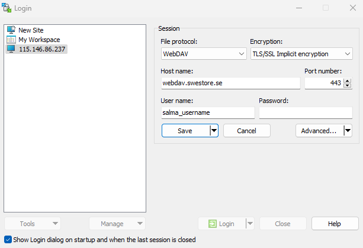
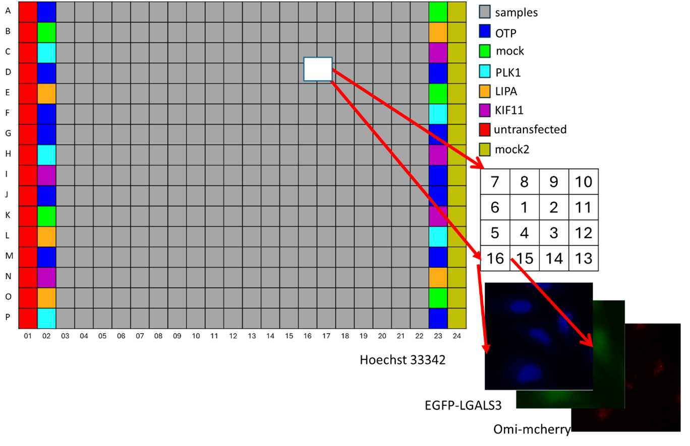

Preprocessing
The original images were in .C01 microcopic format stored on Swestore.
Access to Swestore
For accessing Swestore, we have used two different tools.
Lftp
First, we have used lftp through terminal:
lftp https://username@webdav.swestore.se/snic/folder/
For downloading whole plate we used:
get plate_number.tar.gz
For uploading files we have used:
put plate_number.tar.gz
WinSCP
The other way to access files on Swestore was winscp tool which is a win-based tool.

Format conversion
For extracting and converting the format of images we have used “bfconvert” function of bftools command line tool.
This is conducted through command line or preprocessing/extract_conversion.py script and subprocess library.
Normalization script
The following command should run over images after bfconvert command to normalize images to 8-bit format,
ls *.png ; while read file; do convert file -auto-level -depth 8 -define quantum:format=unsigned -type grayscale file; done
or through extract_conversion.py script.
Check validity of plates
For a correct, complete plate we should have A-P rows as well as 01-24 columns (6144).

with the following command we could see if each well (A01-P24) and 16 images per well exist.
ls | cut -d _ -f 3 | cut -b 1-3 | sort | uniq -c